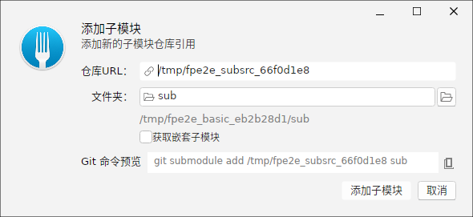
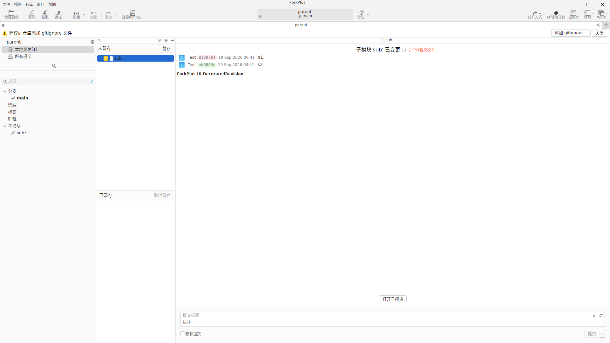
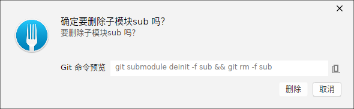
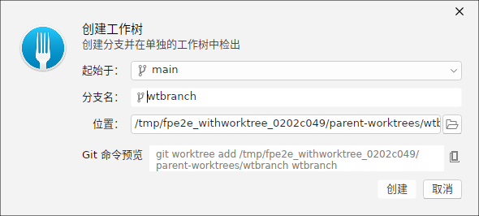
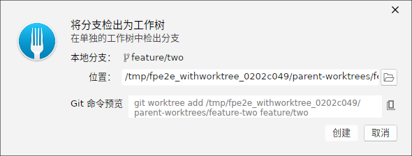
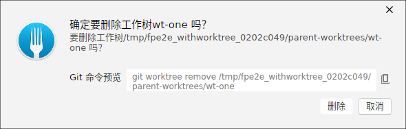

添加子模块
「添加子模块」对话框通过指定外部仓库 URL 与目标子目录路径，把一个 Git 仓库作为子模块嵌入当前仓库。填妥后预览对应的 git submodule add 命令。

子模块 Diff 视图
当子模块的指针前进（指向了新提交）或工作区变脏时，它会在变更视图里表现为一个待处理条目。选中后用子模块 Diff 视图展示指针变化的方向与新旧提交，方便确认是否要更新并提交该子模块引用。

删除子模块
「删除子模块」对话框把某个已嵌入的子模块从仓库中移除。它会预览 git submodule deinit 与 git rm 的双命令链，先解除注册再删除目录与索引引用。

创建新 Worktree
「创建 Worktree」对话框从当前仓库派生出另一个工作目录，并以新分支检出。指定新分支名后，ForkPlus 会自动派生落地目录，并预览 git worktree add 命令，适合在不打断当前工作区时并行开展新功能。

把分支检出为 Worktree
若想把某个已经存在的分支单独放到独立的 Worktree 目录中（而不是切换当前目录的检出），可使用「检出为 Worktree」对话框，选择目标分支后预览 git worktree add 命令。

删除 Worktree
「删除 Worktree」对话框移除不再需要的 Worktree。它会预览 git worktree remove 命令并清理对应的工作目录，之后该分支即可重新被其他目录检出。

说明：子模块与 Worktree 都以独立小仓库/独立目录的形式存在。删除 Worktree 前请确保没有未提交的改动；改用 Worktree 后，原目录任意时刻仍能检出其他分支而不必暂停当前工作。